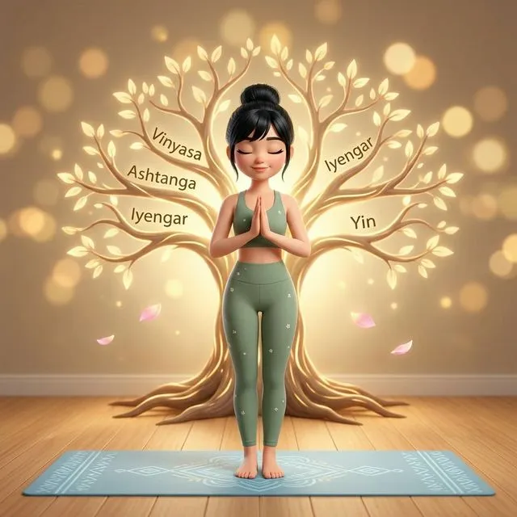

📑 Trong bài viết này
🌳 Yoga là một cây đại thụ
Nếu ví Yoga là một cây đại thụ, thì Hatha Yoga chính là thân cây — nơi các nhánh Vinyasa, Ashtanga, Iyengar, Yin... đều mọc ra từ đó.
Mọi trường phái yoga hiện đại mà bạn biết đến ngày nay — dù nhanh hay chậm, dù mạnh mẽ hay nhẹ nhàng — đều bắt nguồn từ cùng một gốc rễ: Hatha Yoga.
"Muốn vươn cao, phải cắm rễ thật sâu." — Với Yoga, Hatha chính là phần rễ vững chắc đó.
☀️🌙 Hatha là gì?
Từ "Hatha" trong tiếng Phạn (Sanskrit) gồm 2 phần:
- "Ha" (ह) — Mặt trời ☀️ → Năng lượng dương (nóng, chủ động, sức mạnh)
- "Tha" (ठ) — Mặt trăng 🌙 → Năng lượng âm (mát, thụ động, mềm dẻo)
Hatha Yoga, vì vậy, là sự cân bằng giữa hai nguồn năng lượng đối lập — là nơi thân — tâm — hơi thở gặp nhau trong sự điều hòa. Không quá mạnh, không quá nhẹ. Không vội vã, không trì trệ. Chỉ là sự hiện diện trọn vẹn trong từng khoảnh khắc.
🧘 Đặc điểm của Hatha Yoga
Khác với Vinyasa (liên tục chuyển động) hay Ashtanga (chuỗi tư thế cố định), Hatha Yoga có những đặc điểm riêng biệt, rất phù hợp cho mọi cấp độ:
🐢 Chậm rãi — Có kiểm soát
Mỗi tư thế được thực hiện chậm, có ý thức. Không vội vã, không cạnh tranh. Bạn có thời gian để thực sự cảm nhận từng chuyển động.
⏱️ Giữ tư thế lâu
Mỗi asana được giữ từ 30 giây đến 2 phút, giúp bạn cảm nhận rõ cơ thể đang ở đâu, đang cần gì.
🌬️ Kết hợp hơi thở sâu
Hơi thở dẫn dắt chuyển động. Mỗi hít vào — thở ra đều có chủ đích, mang tính tỉnh thức và hiện diện.
📐 Tập trung vào căn bản
Các nhóm tư thế nền tảng: đứng — ngồi — nằm — xoay — gấp — mở. Hiểu căn bản để vươn xa.
Dù bạn là người mới bắt đầu hay người đã tập lâu năm, Hatha đều là nơi bạn có thể quay về để hiểu mình từ gốc rễ.
💚 Lợi ích nổi bật
Hatha Yoga không chỉ là tập thể chất — đó là cách bạn chăm sóc toàn diện cho cơ thể và tâm trí:
Kích hoạt hệ phó giao cảm, đưa cơ thể vào trạng thái "nghỉ ngơi & phục hồi" — giảm cortisol, tăng serotonin.
Giữ tư thế tĩnh giúp phát triển sức mạnh cơ sâu (deep muscle strength) — không cần tạ, không cần máy.
Yoga tác động sâu lên hệ tiêu hóa, điều hòa nội tiết tố, và cải thiện chất lượng giấc ngủ đáng kể sau 4-6 tuần.
Sự kết hợp giữa hơi thở sâu, tư thế tĩnh và thiền giúp "tắt" chế độ stress, đem lại sự bình yên nội tại.
🤔 Nếu bạn đang...
Hãy tự hỏi — bạn có đang trải qua những điều này không?
- Cảm thấy cơ thể không ổn định — hay đau mỏi, cứng khớp
- Dễ mệt, hay căng thẳng, mất năng lượng vào buổi chiều
- Cần một nền tảng yoga an toàn — bền vững để bắt đầu đúng cách
- Muốn hiểu cơ thể mình hơn trước khi thử các phong cách yoga nâng cao
Đừng bắt đầu yoga bằng những thứ phức tạp. Hãy bắt đầu từ Hatha — nơi bạn học cách lắng nghe cơ thể, kết nối với hơi thở, và xây dựng nền tảng vững chắc cho mọi hành trình phía trước.
✨ Bắt đầu từ hôm nay
Bạn không cần một cơ thể dẻo dai để bắt đầu yoga.
Bạn không cần một không gian hoàn hảo.
Bạn chỉ cần chính mình — hơi thở — và một khoảnh khắc hiện diện.
"Yoga bắt đầu ngay tại điểm bạn đang đứng — không phải nơi bạn nghĩ mình phải đến."
Hatha Yoga chính là gốc rễ đó. Hãy bắt đầu từ chính hơi thở và cơ thể bạn hôm nay.